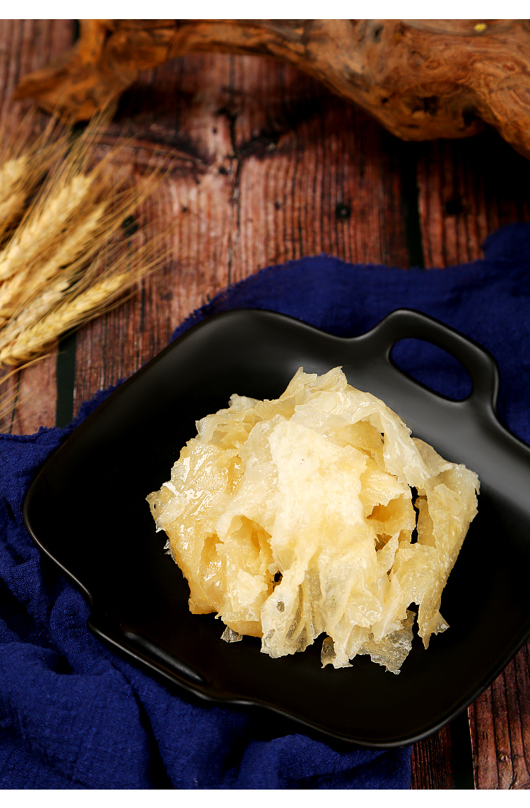
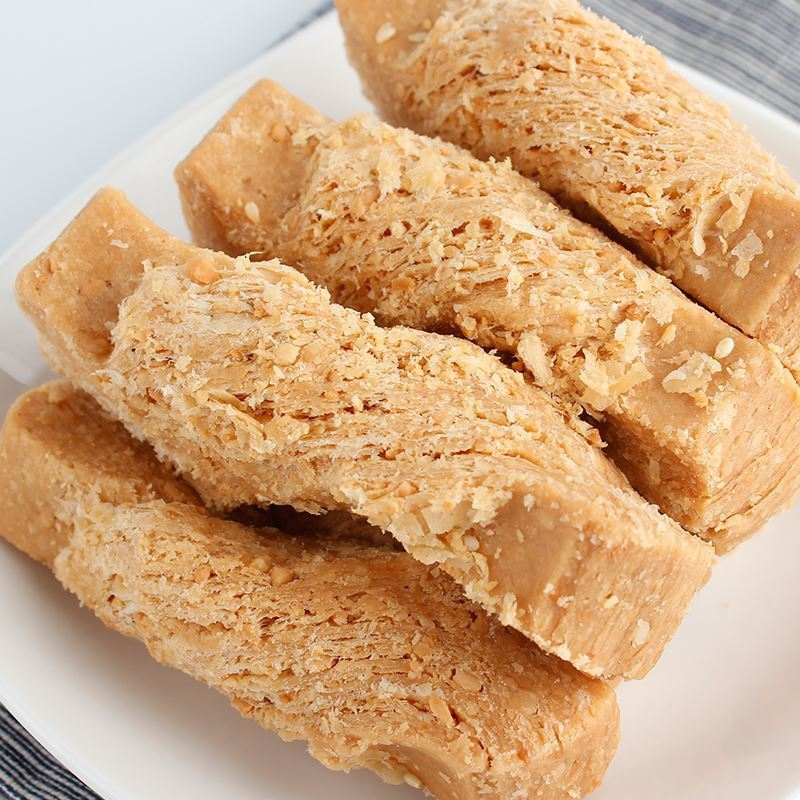

唐山十大美食
唐山十大本地特色美食，你都吃过吗？
-
棋子烧饼
状如小鼓，个似棋子的棋子烧饼又酥又脆，是唐山最有特点的小吃，也是非物质文化遗产。起源于唐山丰润县城关，是客商络绎不绝的京东大御路的要冲。
-

迁西板栗
迁西板栗，个头小巧玲珑，色泽光鲜，香糯甘美。细算起来，迁西板栗的栽培史距今已有2000多年。《战国策》中就有记载，苏秦游说燕文侯时提到“北有枣栗之利，民虽不田作，枣栗之实，足食于民矣…”与《史记·货殖列传》里写道的“燕秦千树栗”都能说明板栗的历史足够悠久。
-

蜂蜜麻糖
蜂蜜麻糖以筋面粉、白砂糖、蜂蜜、香油、花生油为主要原料，具有片层均匀、偏薄如纸，色泽淡黄等特点。明朝万历4年，即公元1577年，丰润县七树庄开设的“广盛号”开始独家经销蜂蜜麻糖，至今已有447年的悠久历史。
-

花生酥糖
花生酥糖，顾名思义，是花生与糖的结合。也是唐山人过年期间走亲访友常备的年货。与蜂蜜麻糖相比，花生酥糖自然是要多上一份花生赋予的馥郁与浓香。正宗的花生酥糖，甜而不腻，酥而不散，入口即化。
-
刘美烧鸡
刘美烧鸡是唐山乐亭的特产美食，清光绪年间就已有了。选用的是柴鸡，肉质软烂。色泽红润，引人食欲。咸香温润不腻口。整只鸡呈现出一种卧睡姿态，造型美观。做一只刘美烧鸡，要用至少28种中药材熬制，香味复合浓郁。烧鸡寓意大吉大利，也是走亲访友的送礼佳选。
-
饹馇
饹馇这一特产美食得名于谐音“搁着”。清朝年间，慈禧太后有个习惯每道菜吃两口就撤。当时唐山这一片的守陵人为了讨好皇家，日子过好点就把这特产送进宫了。慈禧看着新鲜，就问是什么菜，太监就说没名字呢，得您老起啊。慈禧尝了一口，挺喜欢，就告诉太监说“搁着吧”，这菜名字就有了。
-
虾酱
唐山作为沿海城市，盛产各种小鲜虾，虾酱便是用这些小鲜虾为原料，加上盐发酵后磨细而制成主料。辅料通常有干辣椒，葱末，鸡蛋清等调味料。满瓶咸鲜味道，是炒菜佐餐的好选择。虾酱虽然不是唐山独有，但唐山地区产出的虾酱量大而质高。
-
鸭黄豆角
将新鲜的豆角下入滚烫的油锅，炸出酥脆的口感。放进去备好的鸭蛋黄炒制，就做出了这道鸭黄豆角。味道咸香，是传统的北方口味。
-
鸿宴肘子
鸿宴也算是唐山的老字号了，明油亮芡的肘子汁，入口软烂的肘子。肘子里外都被煨到入味，滋味十足，不愧是鸿宴的金字招牌菜。
-
朝鲜面
唐山人，习惯早餐来一碗朝鲜面。起初只是唐山地区朝鲜族入乡随俗后的习惯改良，后来就与朝鲜冷面完全不同了。毕竟唐山朝鲜面热汤的。将朝鲜面的面条烫熟，再在汤里加点虾皮和紫菜或再加点辣椒油、辣白菜，开启新一天。唐山朝鲜面不酸不甜而是咸鲜为主，辣味为辅，是老少咸宜的早餐。